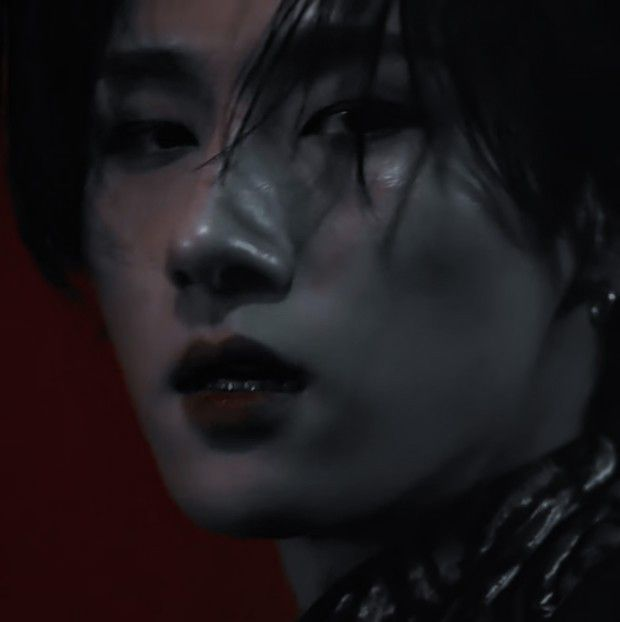
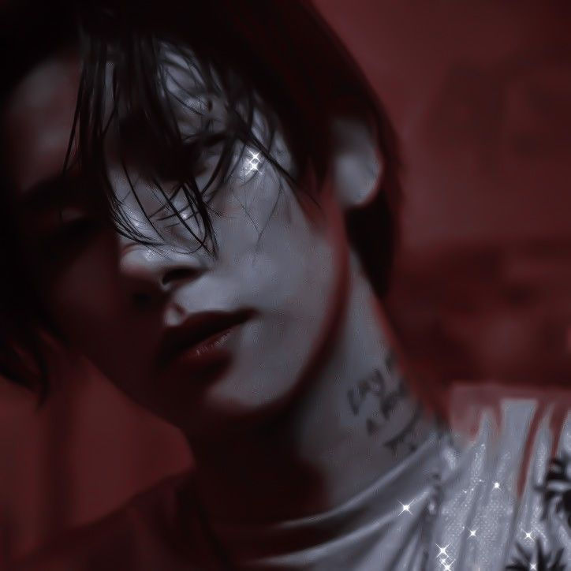
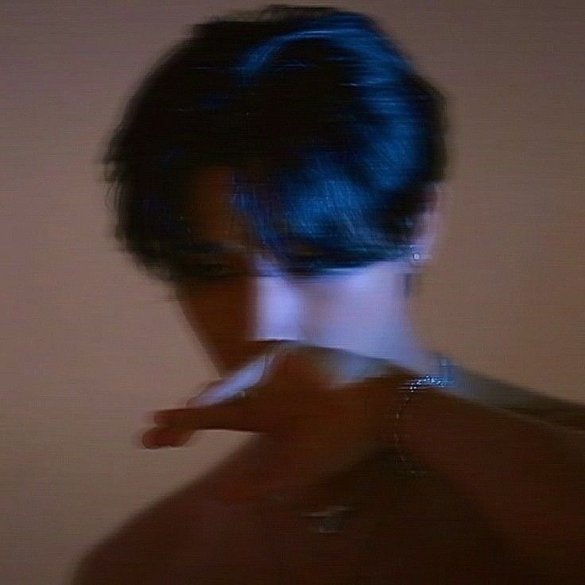
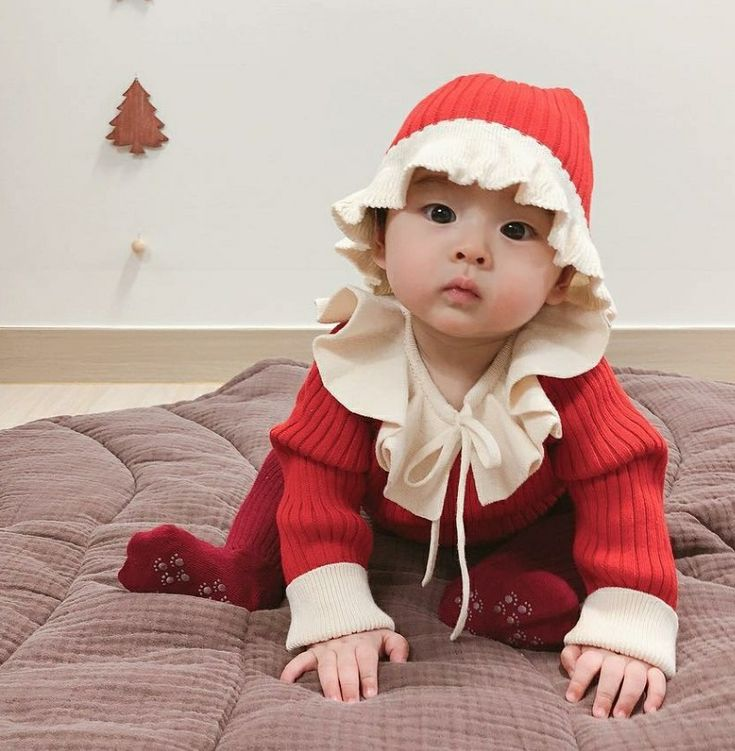
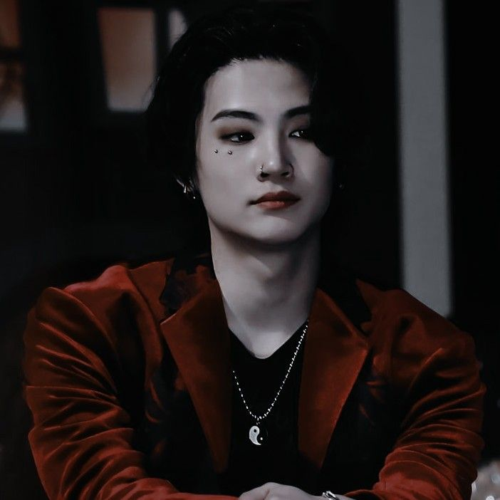
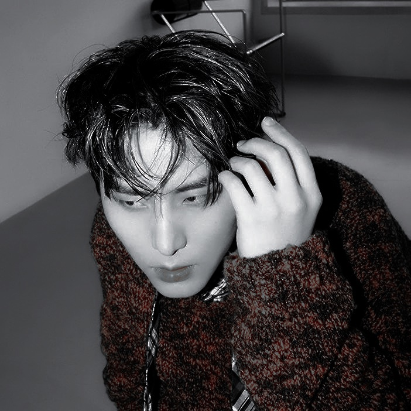
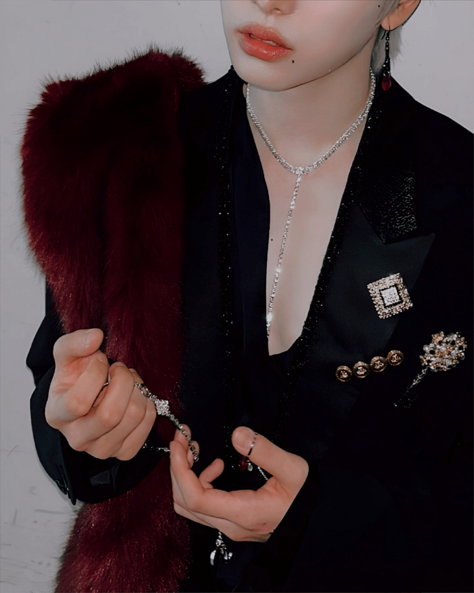
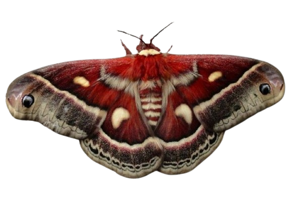
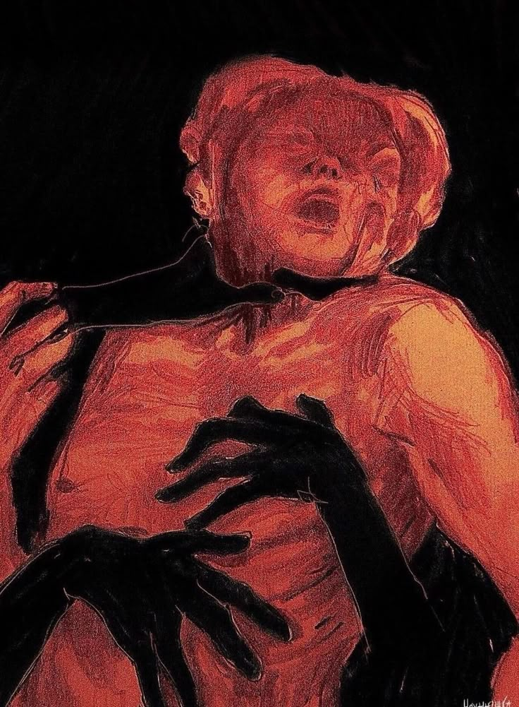
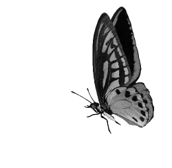

| 𝖬𝗒 𝗁𝗎𝗌𝖻𝖺𝗇𝖽 | ı love чou    |
|---|---|
| 𝖬𝗒 𝖻𝖺𝖻𝗒 |  |
| 𝖥𝗋𝗂𝖾𝗇𝖽𝗌 |   |
| T O X I C |
CD
 | IKUK | #몽베스트퍼포먼스 |
|---|---|
| 𝘚𝘵𝘳𝘢𝘪𝘨𝘩𝘵 𝘪𝘯𝘵𝘰 𝘵𝘩𝘦 𝘢𝘣𝘺𝘴𝘴 |
𝙃𝙞𝙨𝙩𝙤𝙧𝙞𝙖
—𝟎𝟕.𝟎𝟖.𝟏𝟗𝟗𝟗—
Era un sábado lluvioso al mediodía bajo los techos de un burdel como uno de tantos en los barrios bajos de esta gran ciudad, había nacido un niño que fue llamado ShinJi, un niño cuya madre de nacionalidad japonesa había tenido la desgracia de caer en manos de prestamistas y, debido a la enorme e impagable deuda esta mujer se convirtió en víctima de trata de blancas siendo secuestrada y vendida a unos mafiosos proxenetas surcoreanos, forzada a ejercer prostitución para sobrevivir al igual que muchas otras mujeres; Entre ellas había betas y omegas femeninas.
—𝟏𝟔.𝟎𝟐.𝟐𝟎𝟎𝟔—
A medida que iba creciendo en el pasar de los años, la dura vida que llevaba golpeaba la puerta de su realidad hasta que rápidamente comenzó a ser consciente de su situación y el calvario que a diario debía tolerar para sobrevivir como el resto de las prostitutas. Sin embargo, el día menos pensado, ShinJi vio con sus propios ojos como un cliente había asesinado a su madre a golpes. Esa escena generó un brote en su cerebro, una desconexión en el que no fue consciente de sus actos y actuó por impulso, era como si su cerebro estuviese apagado y no tuviese control de su cuerpo actuando de manera involuntaria. En ese instante tomó una tijera de costura que había cerca de la mesa de la habitación de su madre y sin dudarlo se abalanzó a aquél alfa asesino, apuñalando en reiteradas ocasiones en diferentes partes del cuerpo hasta que este finalmente murió desangrado. Debido a que ShinJi era menor de edad y bajo el contexto de que este hombre había matado a esa pobre mujer frente al niño, no hubo condena para él, sin embargo, fue llevado a un orfanato en el cual estuvo al menos dos años.
—𝟐𝟎.𝟏𝟐.𝟐𝟎𝟎𝟖—
 Pasado ese tiempo una pareja de clase alta decidió adoptarlo, esta pareja se trataba de unas personas de alto poder adquisitivo con cargos importantes; Su madre adoptiva era una diputada del congreso de la nación, se trataba de una omega dominante, mientras que su padre adoptivo era el CEO de una empresa farmacéutica, un alfa también del tipo dominante, y entre todos los omegas que había en ese orfanato, adoptaron a ShinJi, un niño que hasta el momento no se había manifestado ni como omega ni como alfa, quedando en al posibilidad de que quizás se trataba de un beta en el mejor de los casos. Confiados en que si no se convertía en un alfa podía ser la segunda jerarquía, lo adoptaron, claro que este trámite no nacía desde el amor, si no por aparentar tener una familia frente a los ojos del público, y en un futuro heredar los cargos de su padre sin saber la desgracia que estaría por vivir. Una vez hicieron el trámite de adopción, el nombre de ShinJi fue cambiado por SimYeon (Cuyo significado al español era traducido como "Abismo").
—𝟎𝟒.𝟎𝟕.𝟐𝟎𝟏𝟖—
Creció en un lugar materialista, claro que le daban todos los gustos monetarios y materiales, de estar desescolarizado pasó a tener la mejor educación de todas, clases extracurriculares para a su vez desarrollar aún más todas sus habilidades artísticas y las no artísticas, como idiomas o defensa personal, sin embargo, nunca recibió una muestra de afecto por parte de ellos. A medida que este fue creciendo volviéndose todo un hombre , su padre consideró que era hora de formarlo para hacerse cargo de su futuro puesto en la empresa, sin embargo, este señor no solo era un empresario de un laboratorio, si no que además era líder de una mafia en el cual traficaba drogas, lavado de dinero, trafico de armas y de personas, entre otras cosas. Una vez que el menor fue consciente de ello comenzó un riguroso y tortuoso entrenamiento, claramente la empatía no era bienvenida en este hogar, porque parte de los entrenamientos también consistían en torturas para aumentar la resistencia física y mental del menor. Desgraciadamente el día menos pensado el joven se terminó manifestando tardíamente como omega recesivo a los casi 19 años, esto se convirtió en una mala noticia para sus padres quienes terminaron decepcionados, lo que menos deseaban en la familia era un omega, que ni siquiera era capaz de hacer bien su trabajo tan básico como dar a luz debido a los problemas que esta sub división presentaba al ser del tipo recesivo. Gracias a esto, su padre aumentó el nivel e intensidad de los castigos, las torturas y el entrenamiento general, inevitablemente la mente y alma de Abismo colapsó, y tras crecer bajo un ambiente insano y violento con falta de afecto y empatía, provocó que desarrollara diversas fobias y trastornos mentales que afectarían en su conducta a día de hoy como hombre adulto. Su desprecio por los alfas y la violencia sanguinaria con la que se crió, tras heredar todos los cargos de su padre se convirtió en un asesino caníbal de alfas, un omega recesivo del tipo bestia que de vez en cuando recurría al consumo de sangre y carne humana específicamente de la primer jerarquía.
—𝟐𝟎𝟐𝟒—
A día de hoy es el primer omega recesivo líder de una mafia que se encuentra en el puesto número uno en Corea del Sur al tener una de las drogas con mejor calidad. Sin embargo, además de fabricar estupefacientes y drogas experimentales con la fachada del laboratorio de la empresa farmacéutica, también trafica armas, hace lavado de dinero, es un prestamista y, pese a toda estas malas etiquetas, a diferencia de su padre que también era participe de la red de trata y venta de órganos, Abismo lo combatía en honor a su madre y sus noonas ayudando a las victimas. Por supuesto que gracias a esto puede colaborar con la policía y a su vez hacer tratos bajo la mesa y seguir impune con el resto de sus rutas ilegales. Luego, abrió una ONG, un centro de ayuda para las personas victimas de trata a quienes les brinda refugio, protección, ayuda económica, educación, asistencia médica y psicológica, comida, un lugar donde dormir, ropa, y todo un proceso en el cual las victimas puedan reinsertarse en la sociedad para tratar de continuar con sus vidas siempre manteniéndolas acompañadas.
𒐤𒐤𒐤𒐤
𝐒𝐮𝐛𝐭𝐞𝐦𝐚𝐭𝐢𝐜𝐚
A día de hoy, Abismo está comprometido con un beta quien es su mejor amigo desde hace más de seis años y con quien actualmente tiene una pequeña bebé llamada Aome, ambos planean en un futuro agrandar la familia. Debido a que ahora tiene personas importantes a quien cuidar decidió alejarse de la ciudad y del mundo de la mafia para mantener protegida a su familia y tener una vida tranquila yalado de las personas que ama, tratando de llevar una vida normal y cotidiana como el resto de las personas. Por eso mismo es que decidió irse a las afueras de la ciudad y vivir en una zona rural, y solo pasa a la ciudad para pasear en familia en ciertas ocasiones.
𒐤𒐤𒐤𒐤
Psicología y personalidad
Debido a los sucesos traumáticos de su infancia y adolescencia bajo los abusos y la violencia, desarrolló ansiedad generalizada aguda y depresión mayor, esto provoca que tenga acciones poco normales y que le cueste controlar siendo parte de la neuroduvergencia. Sus emociones suben y bajan cual montaña rusa y es invadido por pensamientos desagradables que no puede evitar el ceder ante ellos.
¿Qué es la ansiedad generalizada (TAG)?
Es una enfermedad mental de comportamiento frecuente y persistente caracterizada por una preocupación excesiva, incontrolable y a menudo irracional —llamada técnicamente anticipación aprensiva— causado por una combinación de factores biológicos y ambientales. Los genes pueden desempeñar un papel al hacer el paciente más propenso a la ansiedad generalizada. Muchas de las personas que la padecen también experimentan otros trastornos médicos, como depresión. Podemos definir las respuestas de ansiedad como reacciones defensivas e instantáneas ante el peligro. Estas respuestas, ante situaciones que comprometen la seguridad del sujeto, son adaptativas para la especie humana. Significa esto que ejercen una función protectora. Los síntomas mentales del Trastorno de Ansiedad Generalizada (TAG) incluyen inquietud, dificultad para concentrarse, sensación de estar "nervioso" o "al límite", irritabilidad, y preocupación excesiva sobre actividades cotidianas como el trabajo, las finanzas o la salud. Otras manifestaciones son tener la mente en blanco, sobresaltarse con facilidad, dificultad para tomar decisiones, e incluso sentir que todo lo que sucede es una amenaza.Es frecuente el tener una dependencia emocional con la pareja y volverse obsesivo, pero así como son dependientes buscan el lado contrario que es negarse a mantener vínculos para evitar el dolor y todo lo que lo pueda conllevar a esas situaciones que prende su TAG. No tiene punto medio, siempre vive en los extremos, y cuando entra en crisis automáticamente solo ve como escape la muerte, y en eso comienza sus planeaciones suicidas y su necesidad de autoflagelarse.
A menudo su trastorno mental provoca una alteración de la realidad general, desde la manera en la que recibe el mensaje, situaciones, momentos, y en sus relaciones interpersonales sean laborales, familiares, amistad y románticas. Genera algo similar a un estado paranoico, un estado de hipervigilancia. Necesita saber todo, quizás esto pueda sonar controlador, pero lejos de ser con esas intenciones, es porque realmente su mente trabaja al mil por segundo, con lo cual necesita tener una estabilidad y tranquilidad, saber lo que va a pasar con alguien o con una situación para no tener que sobrepensar y tener "conocimiento del futuro".
Es una persona llena de heridas emocionales que a modo de defensa, se muestra como alguien frío e inexpresivo. Intenta no interactuar con las personas o entablar una relación o amistad porque es un lobo solitario que, debido a muchas traiciones trataba de trazar una linea la cual no debían de cruzar, con su filofobia, ansiedad y depresión intenta autosabotear sus relaciones.
Suele estar en su mundo, disperso mientras disocia. Debido a su dificultad por expresar pensamientos y emociones, tiende a guardarse las cosas hasta que explota. Dicho esto, también tiene depresión mayor crónica desde los 14 años.
¿Qué es la depresión mayor?
Es una enfermedad mental crónica y grave que afecta el estado de ánimo, los pensamientos y el comportamiento de una persona, causando una tristeza profunda y una pérdida de interés en actividades cotidianas durante un tiempo prolongado. Se manifiesta con síntomas como fatiga, dificultad para concentrarse, cambios en el apetito y el sueño, sentimientos de inutilidad y, en casos graves, pensamientos suicidas. La causa exacta es desconocida, pero se cree que es una combinación de factores genéticos, cambios químicos en el cerebro y eventos vitales estresantes.En su trabajo como mafioso es sanguinario y sádico, en ese aspecto hace uso de la psicología oscura y también se vuelve un empático oscuro con toda persona que sabe que lo van a traicionar.
Sin embargo cuando finalmente alguien logra llegar a su corazón sea amigo o pareja muestra su lado más vulnerable y dócil, siendo alguien detallista, amoroso y apasionado. Es un hombre responsable, fiel a los demás y a si mismo, sin embargo también es exigente, le gusta la reciprocidad en todas sus relaciones interpersonales. Es incondicional, y defiende a los suyos a capa y espada, pero debido a todo lo mencionado es difícil de tratar y no todos pueden con su carácter volátil.
Mundo Omegaverse
En esta sección se explicará cómo se desarrolla en esta versión propia el mundo omegaverse y la jerarquía correspondiente al personaje.En esta creación del omegaverse, todo se desarrolla de manera cotidiana a lo que se lo conoce, cada jerarquía cumpliendo su función con sus caracteristicas físicas así como los roles sociales y las injusticias que ocurren día a día con estos por la discriminación de clases, Alfa, Beta, y Omega. Cada clase tiene una sub división con las características que ya todos conocemos. En este caso, mencionamos con anterioridad que Shinji se había manifestado tardíamente como un omega recesivo, pero... ¿qué es exactamente un omega recesivo?
El omega recesivo es denominado despectivamente como un "omega defectuoso", se le denomina recesivo aquél que por factores hormonales no puede producir y controlar correctamente sus feromonas, a veces esto es una ventaja ya puede pasar desapercibido como un beta ya que su aroma parece solo una colonia que apenas se siente incluso si hueles muy de cerca, pero en periodos de calor o si tiene contacto cercano con un alfa dominante, podría ser perjudicial debido al poco control de sus feromonas cuando estas finalmente se disparan. Poseen celos irregulares que son prolongados, repetitivos y sobre todo dolorosos (sufren dolores similares a los cólicos en el vientre, y también dolores en sus intimidades debido a la falta de estímulo en su periodo de calor).
Todos los omegas deben tomar supresores ya que son básicamente anticonceptivos, se sabe que estos medicamentos contienen hormonas y se utilizan no solo para prevenir embarazos, si no para regular las feromonas y hormonas así como también tratar de mantener un celo estable y regularlo, además tiene funciones adicionales tales como disminuir los dolores. Sin embargo, estos inhibidores en omegas recesivos no son del todo efectivos y poseen efectos secundarios más notorios, por lo que los médicos recomiendan enlazarse con un alfa dominante cuyas feromonas regulan de manera natural el funcionamiento del omega al ser compatibles.
Los recesivos a su vez tienen una tasa de fertilidad baja, se les dificulta quedar en cinta y son propensos a sufrir abortos espontáneos, complicaciones durante el embarazo y parto, poniendo la vida del omega y del bebé en peligro. Es por eso que cuando estos estan en cinta necesitan absoluto cuidado y de las constantes feromonas del alfa para mantenerlo estable a la pareja y al bebé que aún se encuentra dentro del vientre, incluso es necesario para la recuperación del omega después del parto.
Las feromonas de Shin huelen a Chocolate blanco y flores frescas de campo, pero estas son fragancia sutiles que apenas se pueden percibir y solo se disparan cuando entra en celo o excitación al tener relaciones sexuales o provocadas por las feromonas de un alfa dominante.
En esta versión propia del omegaverse, la marca de un omega hacia un alfa es temporal por lo cual cada cierto tiempo debe renovarlo, mientras que un alfa puede marcar a un omega de manera temporal o definitiva a elección, sin embargo, Shin tiene rechazo hacia esa jerarquía debido a su trauma y por eso es que prefiere a los betas con quien tiene mayor compatibilidad y estabilidad.
A su vez se mezcla con la fantasía de que alfas y omegas puedan tener un animal interior siendo cambiaformas, transformandose por completo en el animal correspondiente o solo a medias como un nekomimi/híbrido. En los casos más raros hay animales mixtos en cualquiera de las dos jerarquías, mientras que los betas se mantienen como simples humanos.
En el caso de Abismo, es un híbido, es un cambia formas de de animales pequeños, es decir, tiene la habilidad en el que puede transformarse en cualquier animal pequeñito, sin embargo este solo utiliza la forma de gato y rara vez un conejo minilop ya que este lo utilizaba solo durante su adolescencia.
Otros datos
En esta sección añadiré información adicional del personaje, pero a su vez también a nivel usuario de lo que permito, lo que no, y cosas a tener en cuenta si deseas tener una amistad, rol o incluso algo más con el personaje. Espero que con estos puntos lo respeten.▶ La temática parte desde la fantasía en un mundo omegaverse, donde no solo son humanos comunes si no también omegas y alfas que tienen la habilidad de transformarse ya sea de manera completa en un animal o a la mitad como un "nekomimi".
▶ En el caso del personaje, además de poseer la habilidad de "cambia formas de animales pequeños" que se mencionó en la sección de "omegaverse", este tiene una habilidad adicional y es que dentro del mismo poder, tiene la habilidad de transformarse en su versión femenina o quedarse en su forma origial masculina aunque no posee control sobre ello por eso mismo se puede transformar y destranformar de un momento a otro de manera sorpresiva. Sin embargo para la versión femenina la temática, personalidad así como las "reglas" a tener en cuenta cambian... 
▶ Aquí te invito a leer la ficha de la versión femenina ( próximamente)
▶ Como usuario me gusta cambiar la estética de mi perfil y con eso también modifico los nicks y los @arroba, mas no significa algo como "ocultar quien soy", este punto por más estúpido que parezca debo aclararlo porque tal y como mencioné en la descripción psicologíca, el personaje ha sido victima de bastante acoso por otros usuarios, difamaciones y demás.
▶ No tengo disponibilidad todo el tiempo, pero si respondo considerablemente rápido asi que espero lo mismo, y de tener bastante demora pido por favor que se me avise con antelación.
▶ Roleo en tercera persona, bastante extenso, con coherencia y casi sin faltas ortográficas, asi que espero lo mismo de la otra parte
▶ En caso de querer tener una relación con el personaje y también convertirnos en partners, debes tener en cuenta de que, no me gustan los multicuentas, entiendo que no todos comparten el mismo pensamiento, y por eso espero respeto y entender qué, si te gusta tener más de una cuenta, más de una vida, más de un partner, no busques tener algo con mi personaje.
▶ Así mismo tampoco roleo con usuarios que tengan pareja ¿Por qué? básicamente porque les quita tiempo para poder rolear, y porque me terminan contando sus problemas amorosos personales en vez de rolear y enfocarse en el momento. Todos estos puntos son a base de la experiencia, asi que sepan entender.
▶ Como usuario ofrezco amistad, rol, y cumplir tus historias que te gustaría llevar a cabo en algún momento.
▶ De personaje a personaje, pido por favor reciprocidad, responsabilidad afectiva y responsabilidad en general, aunque esto también se podría aplicar de usuario a usuario.
▶ Si tienes algun conflicto conmigo, con mi personaje, cualquier idea random o inquietud no dudes en decirmelo para resolverlo desde el respeto y la humildad, sin soberbia, sin pelea de egos, y con total madurez.